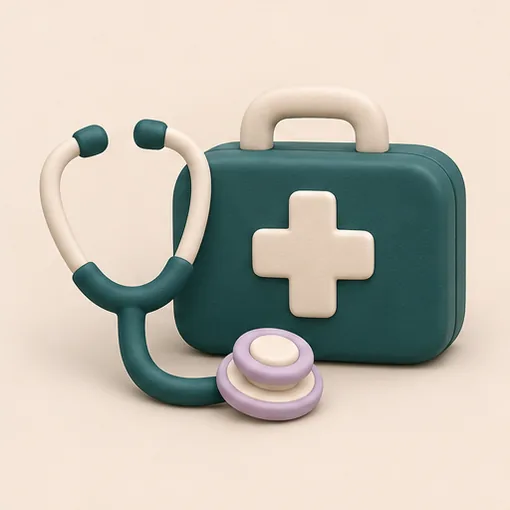

Converse diretamente
Cumprimente a pessoa surda e fale com ela, inclusive quando houver intérprete ou acompanhante.
Boas práticas para acolher, conversar e confirmar se a comunicação funcionou durante uma consulta.

Cumprimente a pessoa surda e fale com ela, inclusive quando houver intérprete ou acompanhante.
“Como você prefere se comunicar neste atendimento?” As preferências variam de pessoa para pessoa e conforme a situação.
Organize interpretação em Libras quando for a preferência, ou combine escrita, imagens e outros recursos apropriados. Evite depender apenas de leitura labial.
Use linguagem clara, dê tempo para perguntas e convide a pessoa a explicar com as próprias palavras ou sinais o que ficou combinado.
Explique o que será feito, peça consentimento e combine com a pessoa se e como o acompanhante participa. Proteja a privacidade da conversa.
Anamnese é a entrevista em que o profissional ouve o motivo da consulta e conhece o histórico de saúde da pessoa. Nesta simulação educativa, Júlia prefere Libras para conversar sobre o que sentiu.
Combine o recurso com Júlia e faça as perguntas diretamente a ela. Dê tempo para que possa contar o que aconteceu e tirar dúvidas.
Júlia decide se quer a participação da acompanhante. Confirme essa escolha e preserve a privacidade da conversa.
A escrita pode complementar a conversa quando for útil para a pessoa. Nesta situação, Júlia já indicou que prefere Libras.